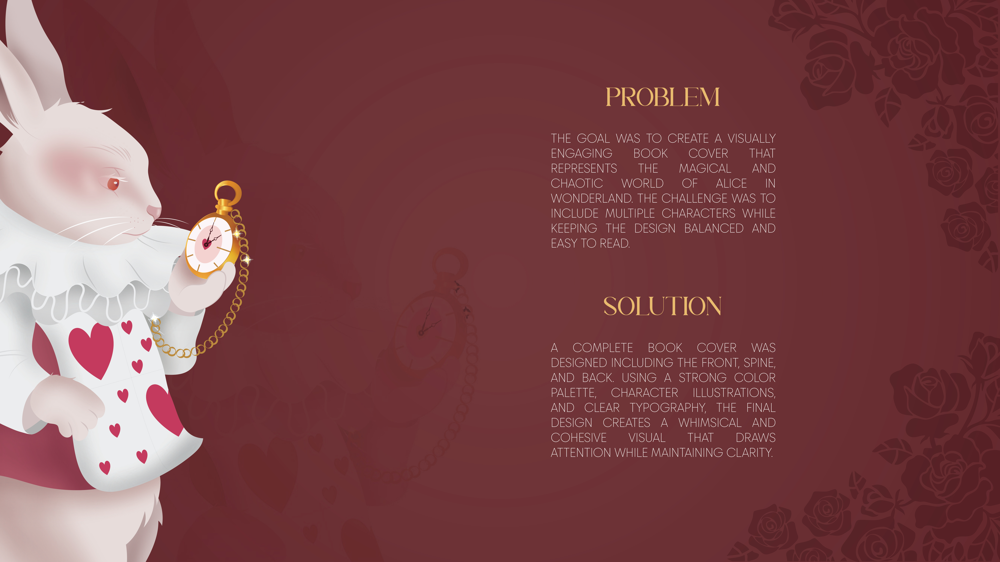
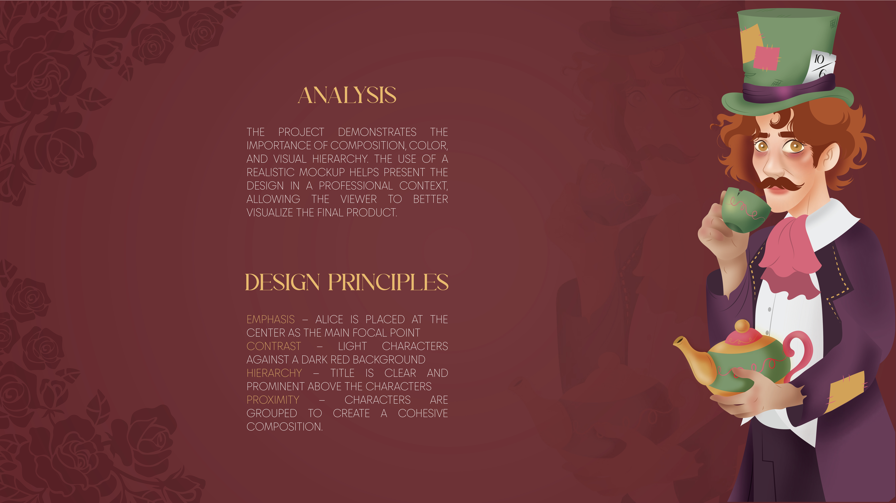

Alice's Adventures in Wonderland
Book Cover Design Process
Book Cover Design Process
Design a book cover that captures the magical world of Alice in Wonderland while keeping the layout balanced, readable, and visually engaging.
A complete book cover was created with custom illustrations, decorative typography, and a vintage-inspired color palette including the front, spine, and back cover.

Research included studying classic Alice in Wonderland illustrations, fantasy artwork, typography, and existing book cover designs to develop the visual direction.


Multiple thumbnail sketches were created to explore different layouts, character placement, and decorative borders before selecting the strongest concept.

The design evolved from rough sketches into clean line art before adding color, lighting, textures, and typography to complete the illustration.


The completed artwork was presented in a realistic 3D book mockup to showcase the final product in a professional context.